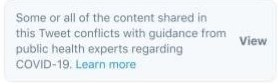

Pandemic Speech

Social-media platforms have adopted an unprecedented approach to misinformation relating to COVID-19: they are now willing to delete content that is false. This article situates COVID-19 misinformation in the spectrum of hate speech, misinformation, and disinformation. It then explores the social-media platforms’ approaches to policing speech before and during the COVID-19 pandemic through the dual lenses of the American First Amendment the Canadian Charter. Social-media platforms appear to be making their content decisions under a framework more akin to that from Canada’s Charter than from the American First Amendment. Further, it is possible, in admitedly unlikely circumstances, that Canada could require social-media platforms to perform content-based deletion of specific misinformation during a pandemic.
This article was prepared in April 2020 for my Communications Law course at UBC’s Peter A. Allard School of Law. I thank Professor Festinger and my classmates for the valuable discussions about media and communications. The article is already dated. When I wrote it, @realdonaldtrump still had a Twitter account and Facebook’s Oversight Board was not yet operational. I am most skeptical of my Section 1 analysis at the end of the article, especially thinking about how Facebook’s Oversight Board recently applied International Human Rights standards to overturn Facebook’s deletion of COVID-19 misinformation.
Introduction
On 27 March 2020, Twitter deleted a tweet written by Rudy Giuliani that contained a false claim that hydroxychloroquine was “100% effective” at treating COVID-19. On 30 March 2020, Facebook, Twitter, and Youtube deleted videos of the Brazilian President, Jair Bolsonaro, that claimed “hydroxychloroquine is working in all places.” These deletions reflect an unprecedented change in the way major social networks treat misinformation.
In the early stages of the COVID-19 pandemic, Twitter, Facebook, YouTube, Google, and others jointly committed to combat COVID-19 misinformation. Twitter and Facebook broadened their definitions of harm to include COVID-19 misinformation. For example, Twitter now recognizes as harmful “content that goes directly against guidance from authoritative sources of global and local public health information.” Facebook is deviating from its long-standing practice of not fact-checking politicians. These changes are a specific response to COVID-19. These platforms have never before had a policy to delete pseudoscientific medical misinformation (e.g. claims that homeopathy or acupuncture are effective, or anti-vaccination propaganda). Only recently, in late 2019, did Facebook begin downranking—not deleting—content that contained exaggerated health claims (e.g. “miracle cure[s]”) or that advertised a health product.
In this article, I situate COVID-19 misinformation within a spectrum of hate speech, disinformation, and misinformation. I explain social media platforms’ approach to non-COVID-19 misinformation through a model of self-governance that has until now appeared rooted in American First Amendment values. However, the tactics that the platforms have adopted with respect to COVID-19 misinformation reveal that their approach to policing expression is actually more akin to that found in Canada under ss. 1 and 2(b) of the Charter of Rights and Freedoms. When deciding to adopt new policies in response to COVID-19, the platforms are performing a balancing exercise rather than adopting an absolutist approach to free expression on their platforms.
I present the factors that the platforms are likely weighing during this balancing exercise, drawing from the factors that are relevant to a s. 1 analysis when the government infringes a person’s right to free expression in Canada. The risk of harm appears to play a prominent role in the platforms’ decision-making processes. Yet the risk of harm is present in non-COVID-19 misinformation as well. I explore the conception of harm that platforms might be adopting in their balancing exercise that would explain their hands-off approach until now.
Having made the decision to police this misinformation, the platforms are now faced with a task they have in the past claimed is insurmountable: categorizing claims on their platform as true or false—permissible or impermissible. This involves value-laden decisions about what entities to consider authoritative, distinguishing claims of fact from opinion, and assessing the risk of harm. I will present their approach to these issues.
Last, I consider whether Canada could require platforms to police COVID-19 misinformation or misinformation more broadly. While this would almost certainly not be an option available to US legislators, I conclude that Canada’s free-expression jurisprudence leaves open the possibility for Canadian legislators to require platforms to intervene—to delete content—in times of discrete emergency.
COVID-19 Misinformation
I refer to the expression being blocked under these policies as misinformation. I adopt a definition of misinformation that assumes only the falsehood of the statement. Misinformation is broader than, but includes, disinformation, which implies an intentional effort to deceive. This is a commonly accepted distinction, adopted by Renee DiResta and Facebook. Given how difficult it is for a platform to know the intent of the speaker, they are necessarily disregarding intent in their treatment of COVID-19 misinformation. Misinformation is also different from hate speech. While hate speech can certainly include misinformation, the reason platforms target hate speech is not because it is false.
Platforms are categorizing COVID-19 misinformation based on its falsehood. This is a content-based categorization and is a novel aspect to the platforms’ response to COVID-19 misinformation. Platforms have generally not deleted expression based on its falsehood. There are two notable exceptions. Pinterest prohibits “promotion of false cures for terminal or chronic illnesses and anti-vaccination advice.” And (only since February 2020) YouTube prohibits a small category of political-process misinformation. Platforms have instead relied on proxy criteria (like the identity of the actor or presence of deceptive behaviours) to delete likely disinformation. For example, Facebook has had little issue removing posts attributed to “well-funded military and intelligence apparatus” (e.g. Guccifer 2.0). And Twitter deletes fake accounts and bots in order to stamp out “faux-organic” content.
What is new about the platforms’ deletion of COVID-19 misinformation is that they are distinguishing between true and false. Under these new policies, it does not matter who makes the false claim; it does not matter whether the claim is part of a deception campaign. Facebook and Twitter have never before deleted information because it was false (YouTube has, and only since February 2020).
But in the context of a novel global pandemic, full of scientific uncertainty, what does it mean for a claim to be false? Twitter has said that it will “prioritiz[e] removing content when it has a clear call to action that could directly pose a risk to people’s health or well-being” but that it will not “limit good faith discussion or expressing hope about ongoing studies related to potential medical interventions that show promise.” They will remove “[d]enial of established scientific facts about transmission during the incubation period or transmission guidance from global and local health authorities.” Facebook will take down content that is “provably false”, that “has been flagged by a global health expert like the [World Health Organization (WHO)],” and “could lead to imminent harm.” YouTube will delete “any content that disputes the existence or transmission of Covid-19, as described by the WHO and local health authorities.” But “[f]or borderline content that could misinform users in harmful ways,” they only reduce recommendations of that content.
In these policy statements we see the platforms adopting the fact–opinion distinction familiar from defamation law. These statements also reveal the harm-based motivation for adopting this more proactive approach to COVID-19 misinformation. Third, they have all identified authoritative sources of the truth for the purpose of their policies.
Non-COVID-19 Misinformation
These policies are at odds with the platforms’ traditional approach to misinformation. While platforms have had policies against “gratuitous violence” and pornography that is in-line with obscenity norms in American media, they have not attempted to divide truth from fiction or fair from unfair. Twitter took such a hands-off approach that it was called “the free speech wing of the free speech party.” Kate Klonick hypothesizes that the “normative background” of the early in-house counsel at these platforms was so infused with First Amendment doctrine that they effectively imported it into Twitter, Facebook, and Youtube.
Where platforms have prohibited content (e.g. obscenity, violence, hate speech), they have been motivated by corporate identity and monetary interests. Misinformation has been policed only by proxy: by targeting bad actors or bad behaviour. But platforms have avoided assuming a role as arbiters of truth. If a private individual says something openly using their primary, personally-identified account, no matter how false or harmful the information might have been, the platforms have left it up. Only recently have the platforms started to police misinformation qua misinformation and it has been with a light touch.
What follows next is a summary of the (often recent) high-water mark of each platform’s treatment of non-COVID-19 misinformation.
“[F]alse news does not violate [Facebook’s] Community Standards.” Unless it violates one of their other content policies, Facebook will not take down misinformation. Their approach to tackling misinformation (since 2016) has been to use fact-checkers who are certified by the International Fact-Checking Network. When a fact-checker judges content to be false, Facebook will downrank the content so that many fewer people will see it, attach a warning label, and include a link to corrective information.
In February, 2020, Twitter announced a policy targeting manipulated media (e.g. deep fakes). When such manipulated media risks creating “serious harm,” Twitter will delete it; otherwise, Twitter will simply label it. While this can be construed as targeting content, this is a special category of misinformation. The medium has been manipulated or synthetically generated. Of course there is an implicit claim that the person depicted in the photo, video, or audio actually did what they have been depicted doing (e.g. a video depicting a trustworthy person X advocating dangerous behaviour Y). In this sense, manipulated media makes a meta claim. Twitter’s manipulated-media policy is the closest that Twitter has come to deleting claims because they are false. However, Twitter’s policies would not result in deletion of a text-based version of the same claim (e.g. a tweet saying that “trustworthy person X advocated dangerous behaviour Y”). This reveals that Twitter’s manipulated-media policy requires more than mere falsehood and harm in order to trigger deletion. Their policy toward manipulated media is based on the manner in which the claim is made and thus is more properly categorized as a behaviour-based distinction.
YouTube
In February, 2020, YouTube announced several categories of content that it would remove: manipulated media that poses a “serious risk of egregious harm,” misinformation about the “voting or census process,” and “false claims related to the technical eligibility requirements for current political candidates.” The manipulated-media category is much like that from Twitter’s policy. However, the latter two categories (political-process misinformation) are rare examples where a platform has decided to remove misinformation based purely on it being false. This is low-hanging fruit, given that there is a clear ground truth about what the voting and census processes involve and what the technical eligibility requirements are.
Alternatives to deletion
Among major social media platforms, YouTube’s recent policy relating to election or census misinformation is the only other example where false claims would be removed because of their falsehood. The platforms all otherwise resort to less intrusive alternatives: downrank, flag or label, and promote more accurate content.
The harms of misinformation
Force, and fraud, are in war the two cardinal virtues.—Thomas Hobbes
Misinformation causes both societal and individual harm. At the societal level, misinformation can result in “distortion of democratic discourse,” “manipulation of elections,” “erosion of trust in significant public and private institutions,” “enhancement and exploitation of social divisions,” and “threats to the economy.” Misinformation sows seeds of doubt, mistrust, and a “cascade of cynicism” that spreads from particular sources to media and experts in general. Misinformation also creates direct harms to individuals. At the low end, this might be misinformation as innocuous as “keeping your cellphone charged at 100% will extend its battery life.” But it also includes much more consequential misinformation that can cause people to waste time and money on medical treatments that do nothing or even worsen a prognosis.
In this article, I present a hypothesis that the major social media platforms are operating under a Charter-like approach to free expression that balances free expression against these harms caused by misinformation. COVID-19 misinformation apparently meets the platforms’ threshold for intervention. This raises the further question: what other misinformation might also meet this threshold?
YouTube has already targeted a small category of democratic-process misinformation. Protecting the integrity of the political process from the harms of misinformation has also been recognized in Canada as a justification for infringing the right to free expression.
I’ve presented the general harms of misinformation above, but I present next a small list of misinformation that is particularly and demonstrably harmful in diverse ways.
Misleading health claims can give patients and families false hope, they can lead patients to forego effective treatment or to undergo interventions that carry risk with no benefit. When the proper treatment has societal benefits (vaccination, for example), following the misinformation leads to societal harms.
Conspiracy theories are another category of misinformation. These take advantage of a psychological need to explain, to control, and to feel like you’re on the “inside.” Conspiracy theories certainly overlap with the category of misleading health claims. Some anti-vaccination theories involve a claim that vaccines are dangerous yet recommended because of “secret and malevolent forces.” Another example of overlap is the conspiracy theory that HIV is not the cause of AIDS. But they also influence how people receive information about socially-important issues like climate change. And conspiracy theories are associated with racist attitudes, although the direction of causation has not been established.
Another kind of harmful misinformation may simply be fraud. This includes financial hoaxsters, multi-level marketing schemes, and even the peddling of “organized pseudolegal commercial arguments” (freemen-on-the-land or sovereign-citizen theories). This latter category has “proven disruptive, inflict[s] unnecessary expenses on other parties, and [is] ultimately harmful to the persons who appear in court and attempt to invoke these vexatious strategies.”
Misinformation and its harm is as old as speech itself, but online misinformation has additional characteristics that increase the risk and extent of that harm, including speed, virality, and anonymity. Platforms may very well be able to decrease the impact of misinformation by targeting these force multipliers rather than the misinformation directly.
An emerging balance
As non-government entities, social media platforms are not subject to the constraints of the First Amendment or s. 2(b) of the Charter. They in fact benefit from the right to free expression to secure their own freedom to govern expression on their platforms as they see fit. But, it is still revealing to examine what free-expression values are reflected in the policies adopted by social media platforms.
The platforms’ actions until now have appeared to reflect liberal First Amendment values and a “reductionist” conception of harm. Platforms’ proactive treatment of COVID-19 misinformation, in the absence of government regulation or obvious market pressures, reveals that the First Amendment isn’t the whole story. There is a communitarian or egalitarian aspect to their self-governance as well. Or if I am wrong about the motivations, their actions today at least reveal that there is space for such a communitarian or egalitarian aspect.
A First Amendment Perspective
The US Supreme Court has interpreted the First Amendment to only allow content-based restrictions within a narrow list of traditionally-recognized categories: “incitement of imminent lawless action,” obscenity, defamation, child pornography, speech “integral to criminal conduct,” fighting words, fraud, true threats, and “speech presenting some grave an imminent threat the government has the power to prevent.” The Court has explicitly noted that “absent from those few categories... is any general exception to the First Amendment for false statements”; “erroneous statement is inevitable in free debate.” The Court has, however, placed less value false statements, but always in the context of some other “legally cognizable harm.” Where the Court has allowed a content-based distinction that would treat false statements differently than true statements, it has been in one of two contexts: commercial speech or falsehood plus harm. And for non-commercial false speech, a remedy is only available to a person harmed after such harm has occurred: there are no prior restraints on non-commercial false statements.
The United States Supreme Court has also “rejected as startling and dangerous a free-floating test for First Amendment coverage based on an ad hoc balancing of relative social costs and benefits.” Note that there is no analogue of Section 1 of the Charter in the US Constitution. Thus, the entire issue is generally framed in terms of First Amendment “coverage”: e.g. does the First Amendment cover obscenity? The Supreme Court of Canada instead has given s. 2(b) of the Charter the broadest possible conception, protecting any attempt to convey meaning. (This does, however, excludes violence and threats of violence.) Whether something like obscenity can be prohibited by the government is framed in Canada as a question of whether the infringement of the right to free expression can be justified under s. 1 of the Charter. This exercise is infused with a balancing of “social costs” and benefits.
Platforms have hewed closely to First Amendment ideals, although straying slightly with respect to several categories of content. These departures are best explained as a response to foreign regulation and market pressures rather than a reasoned balancing of harm and expression: “It’s no coincidence that YouTube, Facebook, Twitter, and Microsoft, which earn substantial portions of their revenues in Europe, apply European hate-speech standards globally—even in countries where that speech is legal.”
Until now though, platforms have resisted pressure to police misinformation. Mark Zuckerberg has said:
[M]isinformation, I think is really tricky... everyone would basically agree that you don’t want the content that’s getting the most distribution to be flagrant hoaxes that are tricking people. But the other side... is that a lot of people express their life and their experiences by telling stories, and sometimes the stories are true and sometimes they’re not. And people use satire and they use fiction ... and the question is, how do you differentiate and draw the line between satire or a fictional story? Where is the line?
But wherever that line might be, COVID-19 misinformation is across that line for these platforms. This reveals that platforms are operating under a vision closer to that from Canada’s Charter than that from the First Amendment.
A Charter Perspective
Some previous restrictions of misinformation by the platforms may appear at first as an adoption of a Charter perspective, but these previous restrictions have been consistent with the narrow exceptions that the US Supreme Court has carved out from First Amendment protection. For example, platforms have generally not allowed misleading or deceptive advertisement. This reflects a conception of free expression that places less value on commercial or profit-motivated speech.
But, the new policies of Twitter, Facebook, Google, and YouTube with respect to COVID-19 misinformation amount to a prior restraint (within each platform) on non-commercial misinformation, before any legally cognizable harm has occurred. This is wholly inconsistent with a First Amendment-inspired lens on the role of free expression. While prior constraints are viewed with particular skepticism by Canadian courts, they are not out of the question, and courts will consider the balance of the “social costs and benefits” that US law avoids.
As presented above, COVID-19 is just the latest subject of misinformation, yet platforms have adopted unusually proactive and strict measures to delete it. When we look at the social costs side of the ledger in Canadian jurisprudence, we find a plethora of factors can explain the platforms’ differential treatment of COVID-19 misinformation, particularly in the s. 1 analysis. To justify an infringement of a Charter right, s. 1 requires the government to identify a pressing and substantial objective and to demonstrate that the means chosen to achieve that objective are proportional (further requiring that the government demonstrate that the means are rationally connected to the objective, that the means are minimally impairing, and that the deleterious effects do not outweigh the salutary effects of the measure).
At the highest level, a s. 1 analysis of infringements of the right to free expression adopts a “communitarian understanding of the harms.” It matters that the harms may be suffered by vulnerable groups. Even the dissent in Irwin Toy (which would have struck down a prohibition on advertising directed at children) said that restrictions could be justified for the “protection of the community.” A “social nuisance” has been sufficient to justify a s. 2(b) infringement. The Court has approved of a restriction on advertising that was “likely to create an erroneous impression about the characteristics, health effects, or health hazard [of tobacco].” “Avoidance of harm to society” was an objective that justified criminal obscenity law. “[C]ourts must determine as best they can what the community would tolerate others being exposed to on the basis of the degree of harm that may flow from such exposure.” To the extent that there is uncertainty about the harmful effects of misinformation, s. 1 jurisprudence has not demanded evidential certainty in order to justify an infringement. The Court in R. v. Butler explicitly relied on “inconclusive social science evidence.”
The approach that platforms have taken to COVID-19 misinformation can be explained through this s. 1 lens. Our collective response to COVID-19 is rooted in a communitarian understanding of its harms. We are not self-isolating because we may personally get sick; we are self-isolating in order to deny the virus a vector for transmission. This is why platforms are combatting misinformation that would lead to people violating isolation guidelines. Facebook has even gone so far to take down pages that organize protests that “defy government’s guidance on social distancing.” It also appears that these harms may be suffered more by vulnerable groups. While there is disagreement and uncertainty about fine details and forecasts, public health authorities are largely in agreement about the big picture on COVID-19: it exists, it is caused by a virus, it spreads through close human–human interaction, and risk of spread is reduced maintaining physical distance, avoiding touching one’s face, washing one’s hands, and wearing a mask. This gives platforms a set of authoritative sources, deviation from which the community is not willing to tolerate. And our COVID-19 response has been likened to a war, which can elicit a statist deference to authority. All of these factors are evocative of those that the Canadian government has previously relied upon (or that courts have alluded to) to justify infringements of the right to free expression.
Despite the claims I’ve made in this section, I acknowledge there may be a more cynical explanation for the change in tack by the platforms towards COVID-19 disinformation. The leadership within these companies may simply feel more personally vulnerable to the effects of COVID-19 misinformation. We see throughout history that response to harm is often delayed until that harm is felt by the powerful. For example, with respect to protections against unreasonable search and seizure, “[s]ocial attitudes toward vagrants as an unworthy underclass delayed resentment of such searches until other more esteemed members of society were subjected to them.”
A Fake News Act
It is one thing for a social media platform to voluntarily adopt measures to combat harmful misinformation, but could our government directly or indirectly control this speech? Such control could take several forms spanning from a criminal offence that targets speakers to regulation that is directed at social media platforms.
The Criminal Code formerly made it a crime to spread false news:
Every one who wilfully publishes a statement, tale or news that he knows is false and that causes or is likely to cause injury or mischief to a public interest is guilty of an indictable offence and liable to imprisonment for a term not exceeding two years.
In R v. Zundel, the Supreme Court of Canada (splitting 4–3) held that the false-news offence was unconstitutional. The majority (written by Justice McLachlin, as she then was) re-affirmed that s. 2(b) of the Charter protects deliberate lies. Deliberate lies are a form of expression. And it isn’t the case, as was argued by the government, that “deliberate lies can never have value.” The majority also identified that it would be difficult to determine with sufficient certainty the meaning of a particular expression and then determine whether it is false.
Given that s. 181 infringed Zundel’s freedom of expression, the question turned to whether the government could justify that infringement under s. 1 of the Charter.
The Court held that the government failed to identify a pressing and substantial objective to which the false-news offence was directed. They saw it as a hold-over from the Statute of Westminster in 1275, enacted as part of Canada’s Criminal Code in 1892 with no explanation. They found no evidence that Parliament had retained it through until today to address any particular social problem. And even if they were to have accepted one of the submitted purposes, they would have found the offence to be overbroad and thus not minimally impairing. A particular concern was the chilling effect created by the vagueness and overbreadth of the offence. Finally, it was significant that this was a criminal offence, which demands a higher degree of justification.
On April 15, 2020, Dominic LeBlanc, President of the Privy Council said that the government is “considering introducing legislation to make it an offence to knowingly spread misinformation that could harm people.” This seems like it would simply be a re-enactment of the unconstitutional s. 181.
But a new Fake News Act wouldn’t necessarily suffer the same fate as s. 181. Parliament could make clear the new purpose of the law, something that was missing in Zundel. They could confine its period of application to a particular emergency. They could restrict it to apply to a narrow category of specific claims instead of “any false news or tale whereby injury of mischief is or is likely to be occasioned to any public interest.” And this would not need to be part of the Criminal Code. For example, it could empower the Canadian Radio-television and Telecommunications Commission (CRTC) rather than prosecutors. Social media platforms contribute to the viral spread of misinformation and thus to the misinformation’s harm. A Fake News Act could target platforms rather than individual speakers (who would be left free to make their false claims on personal blogs).
From a federalism perspective, this would be within the jurisdiction of the federal government either through its control of telecommunications and broadcasting (if it targets platforms), or it could be within the emergency-powers branch of federal jurisdiction over peace, order, and good government.
While a Fake News Act like I just described would absolutely infringe the s. 2(b) right to free expression, it would have a better shot at justification under s. 1 than the former Criminal Code s. 181. In order to be justified under s. 1, the infringement would have to be a “reasonable limit[] prescribed by law as can be demonstrably justified in a free and democratic society.”
Before embarking on the heart of the s. 1 analysis, it is important to characterize the harm being targeted and the nature of the right affected. This characterization is critical to a proper application of s. 1. The characterization will inform the proportionality prong of the Oakes test, but it will also tune the “margin of appreciation” that the legislature is due and set the appropriate “standard of justification” throughout the analysis.
Even if directed at platforms, there are two possible conceptions of the right being affected. One view is that this would be targeting the commercial or profit-motivated aspect of speech that is not even the platform’s own expression. The Court would be likely to view this expression as lower-value expression and apply the s. 1 analysis more leniently for the government.
On the other hand, the Court may not read much into the formal distinction that it is the platform being targeted. In R. v. Guignard, there was a bylaw that prohibited people from “advertising” using signs (including counter-advertising) in certain areas of the city. The Court recognized that the bylaw effectively restricted Guignard to “virtually private communications such as distributing leaflets in the neighborhood around his property.” A user whose speech is removed by a platform has the option of posting on their personal blog with still worldwide reach, but this might be akin to “virtually private communications such as distributing leaflets.” If content is blocked from social media platforms, “then the content would effectively not exist.”
Much of the s. 1 analysis will depend on whether the restrictions directed at the platforms amount to merely taking away a megaphone or restricting users to virtually private communications.
The Court would almost certainly accept that the Act has a pressing and substantial objective: to combat the society-wide harms associated with non-compliance caused by COVID-19 misinformation that is spread easily through major social media platforms. These harms are presented above, and the Court has generally adopted a fairly permissive approach at this stage of the s. 1 analysis.
The government would also be likely able to demonstrate a rational connection between the regulation and the objective. It does seem straightforward that directing platforms to delete COVID-19 misinformation would reduce belief in that misinformation. But, the effect of misinformation may not have as large a magnitude as is often attributed to it, and evidence suggests that other strategies like corrective information or labelling fake news may not yield intuitive results. I am not aware of any empirical evidence regarding the effectiveness of post-publication deletion of false claims, let alone in the context where this deletion is likely incomplete (posts will get through the cracks). Even in light of this social science uncertainty though, the Court has accepted that “[t]he government must show that it is reasonable to suppose that the limit may further the goal, not that it will do so.” “Where the court is faced with inconclusive or competing social science evidence relating the harm to the legislature’s measures, the court may rely on a reasoned apprehension of that harm.”
Whether a new Fake News Act would be viewed as minimally impairing would depend on how narrowly the prohibition is tailored and applied in practice. If it is time-limited, restricted to specific, pre-identified COVID-19 misinformation (so as to not be overbroad), applying only to large social media platforms (so as to only remove a megaphone, not gag the speakers), it would be more likely to be seen as minimally impairing. It would also need to be demonstrated that lesser alternatives would not meaningfully achieve the government’s objective. Platforms and the government do have lesser alternatives that they use for non-COVID-19 misinformation. This would cut against the government’s assertion that deletion orders would be minimally impairing.
It would also have to be seen whether such a regime would be administered in a manner that respects a narrow tailoring. To determine whether something is a false claim, it “must be seen in its entirety, with close attention to context, tone, and purpose. A work that may appear to be [false (originally, obscenity)] may in fact be a biting political satire or critique.”
The final balancing of the salutary and deleterious effects of a Fake News Act will depend on its form and on the Court’s conception of the speech that it is targeting. If it targets platforms through the CRTC, it may be seen as significantly less deleterious than the previous s. 181 of the Criminal Code, especially if the opportunity to publish elsewhere is seen as a meaningful alternative for speakers. But if alternative avenues for speech actually are meaningful alternatives for speakers, this may decrease the Act’s salutary effects, since the expression would still be entering the world.
A Fake News Act may be able to strike this balance. But given the fine line that such an act would have to toe, it is unlikely that outside of a discrete emergency with identifiable and imminently harmful misinformation requiring suppression (as opposed to lesser alternatives like flagging) would our government be able to control misinformation through legislation. While I have presented this as a possibility, I admit it is hard to imagine just what expression might meet this hurdle.
Conclusion
Platforms have appropriately shifted towards a Charter-like perspective on free expression, revealed most acutely in their decision to delete COVID-19 misinformation. If platforms view as a serious responsibility the task of balancing free expression against harm, this implies that more areas of misinformation may soon be subject to platform oversight, especially false and harmful health claims. And, Parliament may even be able to require such platform oversight in discrete emergencies where there is identifiable and imminently harmful misinformation.
Notes
1. ↑ See Tom Porter, “Twitter Deleted a Tweet by Rudy Giuliani for Spreading Coronavirus Misinformation”, Business Insider (29 March 2020). See also Rosalind S Helderman, Josh Dawsey & Jon Swaine, “Giuliani, a Familiar Voice in Trump’s Ear, Promotes Experimental Coronavirus Treatments” (5 April 2020) (reporting instead that Twitter “locked Giuliani’s account until he deleted [the tweet]”).
2. ↑ Josh Constine, “Facebook Deletes Brazil President’s Coronavirus Misinfo Post”, TechCrunch (30 March 2020). See also Kurt Wagner, “Facebook, Twitter, Youtube Remove Posts from Bolsonaro”, Bloomberg (30 March 2020).
3. ↑ See Nick Statt, “Major Tech Platforms Say They’re ‘Jointly Combating Fraud and Misinformation About COVID-19”, The Verge (16 March 2020).
4. ↑ Vijaya Gadde & Matt Derella, “An Update on Our Continuity Strategy During COVID-19”, Twitter (16 March 2020), online: <blog.twitter.com/en_us/topics/company/2020/An-update-on-our-continuity-strategy-during-COVID-19.html> (updated 1 April 2020).
5. ↑ See Kurt Wagner, “Facebook Still Won’t Fact-Check Political Ads Headed into Election Season”, Time (9 January 2020) (in January, Facebook said they were “sticking with a controversial policy that stipulates the company will not fact-check posts from politicians”).
6. ↑ Travis Yeh, “Addressing Sensational Health Claims”, Facebook (2 July 2019); See also Sarah Perez, “Facebook News Feed Changes Downrank Misleading Health Info and Dangerous ‘cures’”, TechCrunch (2 July 2019).
7. ↑ Canadian Charter of Rights and Freedoms, ss 1, 2(b), Part I of the Constitution Act, 1982, being Schedule B to the Canada Act 1982 (UK), 1982, c 11 [Charter]. Section 2(b) of the Charter establishes freedom of expression, “including freedom of the press and other media of communication” as fundamental freedoms. Section 1 of the Charter “guarantees the rights and freedoms set out in [the Charter] subject only to such reasonable limits prescribed by law as can be demonstrably justified in a free and democratic society.”
8. ↑ See e.g. Casey Newton, “Why Facebook Doesn’t Follow the First Amendment”, The Verge (10 October 2019).
9. ↑ See Renee DiResta, “Computational Propaganda: If You Make it Trend, You Make it True” (2018) 106:4 The Yale Review 12 at 14; See also Jennifer Daskal, Danielle Keats Citron & Nathaniel Gleicher, “Free Speech Project: Confronting Viral Disinformation”, New America (26 March 2020) at 04m:50s, online (video): <youtu.be/a6hFwYxUSxM>.
10. ↑ R v Keegstra, [1990] 3 SCR 697 (“[t]here is very little chance that statements intended to promote hatred against an identifiable group are true” at 763).
11. ↑ See Danielle Keats Citron, “Addressing Cyber Harassment: An Overview of Hate Crime in Cyberspace” (2015) 6 Case W Res J L Tech & Internet 1 at 61–62. And regarding political propaganda, another category of suspect speech, see generally Caroline Mala Corbin, “The Unconstitutionality of Government Propaganda” Ohio St LJ [forthcoming in 2021].
12. ↑ See Kate Klonick, “The New Governors: The People, Rules, and Processes Governing Online Speech” (2018) 131 Harvard Law Review 1598 at 1660.
13. ↑ “Health Misinformation”, Pinterest, online: <help.pinterest.com/en/article/health-misinformation>.
14. ↑ See Leslie Miller, “How YouTube Supports Elections”, YouTube (3 February 2020), online: <youtube.googleblog.com/2020/02/how-youtube-supports-elections.html>.
15. ↑ See Camille François, “Actors, Behaviors, Content: A Disinformation ABC: Highlighting Three Vectors of Viral Deception to Guide Industry & Regulatory Responses”, Transatlantic High Level Working Group on Content Moderation Online and Freedom of Expression (20 September 2019).
16. ↑ Ibid at 3.
17. ↑ Abby K Wood & Ann M Ravel, “Fool Me Once: Regulating ‘Fake News’ and Other Online Advertising” (2018) 91 S Cal L Rev 1227 at 1271–72.
18. ↑ See Miller, supra note 14.
19. ↑ Gadde & Derella, supra note 4.
20. ↑ Ibid.
21. ↑ Daskal, Citron & Gleicher, supra note 9 at 08m:40s.
22. ↑ Leo Kelion, “Coronavirus: YouTube Tightens Rules after David Icke 5G Interview”, BBC News (7 April 2020).
23. ↑ Ibid.
24. ↑ See Grant v Torstar Corp, 2009 SCC 61 at para 31; Gertz v Robert Welch, Inc, 418 US 323 (1974); Milkovich v Lorain Journal Co, 497 US 1 (1990).
25. ↑ See Klonick, supra note 12 at 1626, 1660.
26. ↑ See ibid at 1620–21. See also Sarah Jeong, “The History of Twitter’s Rules”, Vice (14 January 2016) (presenting Twitter’s early rules: “we will not actively monitor and will not censor user content, except in the limited circumstances below,” referring to categories of “Impersonation, Privacy, Violence and Threats, Copyright, Unlawful Use, Serial Accounts, Name Squatting, Malware/Phishing, Spam, and Pornography”).
27. ↑ See Klonick, supra note 12 at 1621.
28. ↑ See ibid at 1626–27.
29. ↑ See François, supra note 15.
30. ↑ Tessa Lyons, “Hard Questions: What’s Facebook’s Strategy for Stopping False News?”, Facebook (23 May 2018), online: <about.fb.com/news/2018/05/hard-questions-false-news/>.
31. ↑ See Josh Constine, “Facebook Now Flags and Down-Ranks Fake News with Help from Outside Fact Checkers”, TechCrunch (15 December 2016) [Constine, “Facebook Now Flags and Down-Ranks Fake News...”].
32. ↑ See Lyons, supra note 30; Constine, “Facebook Now Flags and Down-Ranks Fake News...”, supra note 31. See generally Katherine Clayton et al, “Real Solutions for Fake News? Measuring the Effectiveness of General Warnings and Fact-Check Tags in Reducing Belief in False Stories on Social Media” (2019) Political Behaviour.
33. ↑ See Yoel Roth & Ashita Achuthan, “Building Rules in Public: Our Approach to Synthetic & Manipulated Media”, Twitter (4 February 2020), online: <blog.twitter.com/en_us/topics/company/2020/new-approach-to-synthetic-and-manipulated-media.html>.
34. ↑ See generally Robert Chesney & Danielle Keats Citron, “Deep Fakes: A Looming Challenge for Privacy, Democracy, and National Security” (2019) 107 Cal L Rev 1753.
35. ↑ See François, supra note 15 (policing deep fakes is a content-based distinction).
36. ↑ Miller, supra note 14.
37. ↑ See Nathaniel Persily, “The 2016 US Election: Can Democracy Survive the Internet?” (2017) 28:2 J Democracy 63 (presents demotion, disclosure, delay, dilution and diversion, deterrence, and digital literacy as alternatives to deletion).
38. ↑ Chesney & Citron, supra note 34 (discussing deep fakes specifically, but these harms stem from disinformation generally, 1777ff).
39. ↑ See Mark Verstraete & Derek E Bambauer, “Ecosystem of Distrust” (2018) 16 First Amendment LR 129 (presenting the doubt, mistrust, and “cascade of cynicism” that spreads from particular sources to media and experts generally).
40. ↑ Steven Novella, “What’s the Harm?” (13 October 2010), online: <sciencebasedmedicine.org/whats-the-harm/>.
41. ↑ See Miller v California, 413 US 15 (1973) [Miller] (discussed above, in the text accompanying note 36).
42. ↑ See Harper v Canada (Attorney General), 2004 SCC 33 [Harper] (the Court allowed a blackout period on election advertising in order to allow response to “potentially misleading election advertising”).
43. ↑ See Novella, supra note 40.
44. ↑ See Olivia Benecke & Sarah Elizabeth DeYoung, “Anti-Vaccine Decision-Making and Measles Resurgence in the United States” (2019) 6 Glob Pediatr Health 1.
45. ↑ See Karen M Douglas, Robbie M Sutton & Aleksandra Cichocka, “The Psychology of Conspiracy Theories” (2017) 26:6 Current Directions Psych Sci 538.
46. ↑ Karen M Douglas et al, “The Social, Political, Environmental, and Health-Related Consequences of Conspiracy Theories” in Michal Bilewicz, Aleksandra Cichocka & Wiktor Soral, eds, The Psychology of Conspiracy (Routledge, 2015) 183 at 184.
47. ↑ Douglas, supra note 46 at 188.
48. ↑ Douglas, supra note 46 at 188.
49. ↑ Douglas, supra note 46 at 188–89.
50. ↑ See Darlena Cunha, “Beware of Selling Yoga Pants on Facebook”, The Atlantic (18 April 2018).
51. ↑ Meads v Meads, 2012 ABQB 571.
52. ↑ Ibid at para 71.
53. ↑ Persily, supra note 37 at 4.
54. ↑ See ibid at 5.
55. ↑ See generally Eldridge v British Columbia (Attorney General), [1997] 3 SCR 624.
56. ↑ See Daphne Keller, “Facebook Restricts Speech by Popular Demand”, The Atlantic (22 September 2019) (“private platforms aren’t really the public square, and internet companies aren’t governments”); Newton, supra note 8 (“most people want [Facebook] to go much further than the First Amendment”); Klonick, supra note 12 (“you get to decide what the tone and tenor of your platform look[] like, and that’s a First Amendment right in and of itself” at 1626).
57. ↑ Pyeng Hwa Kang, “Constitutional Treatment of Hate Speech and Freedom of Expression: a Canada–US Perspective” (2018) 14 Revue des droits de l’homme at para 15.
58. ↑ United States v Alvarez, 567 US 709 at 717 (2012) [Alvarez], citing Brandenburg v Ohio, 395 US 444 (1969) (imminent lawless action); Miller, supra note 41 (obscenity); New York Times Co v Sullivan, 376 US 254 (1964) (defamation); Giboney v Empire Storage & Ice Co, 336 US 490 (1949) (speech integral to criminal conduct); Chaplinsky v New Hampshire, 315 US 568 (1942) (fighting words); New York v Ferber, 458 US 747 (1982) (child pornography); Virginia Bd of Pharmacy v Virginia Citizens Consumer Council, Inc, 425 US 748 (1976) [Virginia Bd of Pharmacy] (fraud); Watts v United States, 394 US 705 (1969) (true threats); and Near v Minnesota ex rel Olsen, 283 US 697 (1931) (grave and imminent threat...).
59. ↑ Alvarez, supra note 58 at 718.
60. ↑ Ibid at 718–719.
61. ↑ The US Supreme Court initially held that advertising was not protected by the First Amendment. See Valentine v Chrestensen, 316 US 52 (1942).
62. ↑ Alvarez, supra note 58 at 717 (cleaned up), citing United States v Stevens, 559 US 460 (2010).
63. ↑ See Irwin Toy Ltd v Quebec (Attorney General), [1989] 1 SCR 927 [Irwin Toy].
64. ↑ See R v Khawaja, 2012 SCC 69 at para 17.
65. ↑ Saskatchewan (Human Rights Commission) v Whatcott, 2013 SCC 11.
66. ↑ See R v Oakes, [1986] 1 SCR 103 [Oakes]; Dagenais v Canadian Broadcasting Corp, [1994] 3 SCR 835 [Dagenais]; RJR-MacDonald Inc v Canada (Attorney General), [1995] 3 SCR 199 [RJR-MacDonald] (“[t]he s. 1 inquiry is an unavoidably normative inquiry” at para 62).
67. ↑ See e.g. “Community Standards”, Facebook, online: <www.facebook.com/communitystandards/> (listing (among other things) violence and incitement, promotion of crime, fraud, child nudity and sexual exploitation, harassment and intimidation, obscenity as content that will be deleted).
68. ↑ Keller, supra note 56.
69. ↑ Newton, supra note 8. This quote also reflects a vision of free expression that is focused on individual liberty and “self-expressive rights of the singular speaker.” Nabiha Syed, “Real Talk About Fake News: Toward a Better Theory for Platform Governance” (2017–2018) 127 Yale LJ Forum 337 at 341.
70. ↑ See e.g. “Advertising Policies Help: Misrepresentation”, Google, online: <support.google.com/adspolicy/answer/6020955>.
71. ↑ See e.g. Valentine v Chrestensen, supra note 61; Virginia Bd of Pharmacy, supra note 58. Profit-motivated speech also holds less value under a s. 1 justification in Canada. See Irwin Toy, supra note 63 (“harm engendered by tobacco and the profit motive underlying its promotion place this form of expression as far from the ‘core’ of freedom of expression values”).
72. ↑ See Little Sisters Book and Art Emporium v Canada (Minister of Justice), 2000 SCC 69 [Little Sisters].
73. ↑ United States v Stevens, supra note 62.
74. ↑ See Oakes, supra note 66. See also Dagenais, supra note 66.
75. ↑ See Kang, supra note 57.
76. ↑ See Irwin Toy, supra note 63 (the *Consumer Protection Act* regulated advertising that was directed at young children).
77. ↑ Ibid at 1009.
78. ↑ See Reference re ss 193 and 195.1(1)(C) of the criminal code (Man), [1990] 1 SCR 1123 (“the public display of the sale of sex”).
79. ↑ Canada (Attorney General) v JTI-Macdonald Corp, 2007 SCC 30 (albeit, this was in the context of commercial, profit-motivated speech).
80. ↑ R v Butler, [1992] 1 SCR 452 [Butler].
81. ↑ Ibid.
82. ↑ See Andrew M Guess et al, “‘Fake News’ May Have Limited Effects Beyond Increasing Beliefs in False Claims” (2020) Harvard Kennedy School Misinformation Review, online: <doi.org/10.37016/mr-2020-004>.
83. ↑ Butler, supra note 80.
84. ↑ Julia Carrie Wong, “Facebook Bans Some Anti-Lockdown Protest Pages”, The Guardian (21 April 2020).
85. ↑ See Ibram X Kendi, “What the Racial Data Show”, The Atlantic (6 April 2020).
86. ↑ See e.g. “Recommendation Regarding the Use of Cloth Face Coverings, Especially in Areas of Significant Community-Based Transmission”, CDC (3 April 2020), online: <www.cdc.gov/coronavirus/2019-ncov/prevent-getting-sick/cloth-face-cover.html>; “Coronavirus disease (COVID-19) advice for the public: When and how to use masks”, WHO, online: <www.who.int/emergencies/diseases/novel-coronavirus-2019/advice-for-public/when-and-how-to-use-masks>; “Masks”, BCCDC, online: <www.bccdc.ca/health-info/diseases-conditions/covid-19/prevention-risks/masks>.
87. ↑ This imagery has been criticized, specifically because of this statist response that it elicits, and the heightened risks to which we might be willing to expose “frontline” workers. See e.g. Yasmeen Serhan, “The Case Against Waging ‘war’ on the Coronavirus”, The Atlantic (31 March 2020).
88. ↑ William J Cuddihy, The Fourth Amendment: Origins and Original Meaning 602–1793 (Oxford University Press, 2009). See also Julia Angwin & Hannes Grassegger, “Facebook’s Secret Censorship Rules Protect White Men from Hate Speech but not Black Children”, ProPublica (28 June 2017), online: <www.propublica.org/article/facebook-hate-speech-censorship-internal-documents-algorithms>.
89. ↑ A separate question is whether such government regulation would nudge platforms toward more expansive self-regulation and a more inclusive conception of harm, or whether government regulation would give platforms an anchor point, beyond which platforms would not feel any need to intervene.
90. ↑ Criminal Code, RSC 1985, c C-46, s 181, repealed by An Act to amend the Criminal Code, the Youth Criminal Justice Act and other Acts and to make consequential amendments to other Acts, SC 2019, c 25.
91. ↑ R v Zundel, [1992] 2 SCR 731.
92. ↑ Three purposes were submitted: “to protect matters that rise to a level of public interest from being jeopardized by false speech” (by the Crown), “to further racial and social tolerance” (by the Canadian Jewish Congress, an intervener), and “to ensure that meaningful public discussion is not tainted by the deleterious effects of the wilful publication of falsehoods which case, or are likely to cause, damage to public interests, to the detriment of public order” (by the Attorney General for Canada, an intervener).
93. ↑ See Irwin Toy, supra note 63.
94. ↑ Elizabeth Thompson, “Federal Government Open to New Law to Fight Pandemic Misinformation”, CBC News (15 April 2020), online: <www.cbc.ca/news/politics/covid-misinformation-disinformation-law-1.5532325>.
95. ↑ Criminal Code, supra note 90, s 181 (repealed).
96. ↑ Charter, supra note 7, s 1.
97. ↑ See RJR-MacDonald, supra note 66 at para 71: “Turning now to the nature of the right infringed under the Act, it is once again necessary to place the appellants’ claim in context. This Court has recognized, in a line of freedom of expression cases dating back to Edmonton Journal, supra, that, depending on its nature, expression will be entitled to varying levels of constitutional protection.” ... “While the Canadian approach does not apply special tests to restrictions on commercial expression, our method of analysis does permit a sensitive, case-oriented approach to the determination of their constitutionality. Placing the conflicting values in their factual and social context when performing the s. 1 analysis permits the courts to have regard to special features of the expression in question... not all expression is equally worthy of protection. Nor are all infringements of free expression equally serious.”
98. ↑ R v Guignard, 2002 SCC 14.
99. ↑ Ibid at para 30.
100. ↑ Danielle Keats Citron, “Extremist Speech, Compelled Conformity, and Censorship Creep” (2018) 93:3 Notre Dame L Rev 1035 at 1056.
101. ↑ See Haig v Canada, [1993] 2 SCR 995 (the “megaphone” metaphor was used in a different context).
102. ↑ See David MJ Lazer et al, “The Science of Fake News” (9 March 2018) 359:6380 Science 1094.
103. ↑ See Clayton, supra note 32.
104. ↑ Alberta v Hutterian Brethren of Wilson Colony, 2009 SCC 37 at para 48.
105. ↑ Harper, supra note 42 at para 77.
106. ↑ Little Sisters, supra note 72 (discussing obscenity, not false news at para 238, Iacobucci, J (dissenting in part)).